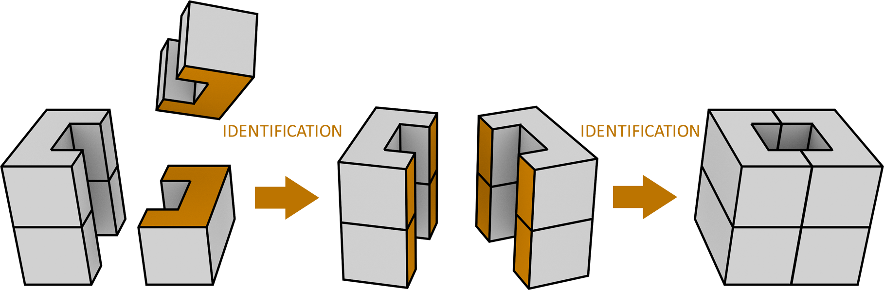

Computer scientist specialized in computer graphics, lastly focused on computational topology and homology computation.
I have a growing interest for topological data analysis and computer vision, especially with application in medical fields.
International Conference on Geometric Modeling and Processing, Online -
Local computation of homology variations over a construction process -
LinkVideo
2019
Journées de géométrie algorithmique, La Bresse (FRANCE) -
Local computation of homology variations related to cell merging : theoretical results and implementation
issues -
Link,
Slides
2018
Journée du Groupe de Travail de Géométrie Discrète et Morphologie Mathématique, Villeurbanne (FRANCE)
- Calcul de l’homologie durant un processus de construction incremental -
Link,
Slides
Journées françaises d'informatique graphique, Poitiers (FRANCE) -
Calcul de l’homologie au cours de la construction d’un objet -
Link,
Slides
Publications
2020
Local computation of homology variations over a construction process -
Wassim Rharbaoui, Sylvie Alayrangues, Pascal Lienhardt, Samuel Peltier, Computer Aided Geometric
Design, volume 81, Link
Softwares
HomInc
HomInc stands for "Homologie Incrémentale", which is the french for "Incremental Homology".
It is a C++ library based on the theory of effective homology, as defined in
Constructive homological algebra by Julio Rubio and Francis Sergeraert.
More precisely, it provides the notions used in this theory, such as chain complexes, reductions and homological equivalences.
It also provides an implementation of the application of the SES theorem to the identification operation, as defined
in Homology Computation during an Incremental Construction of Simplicial or
Cellular Structures by Pascal Lienhardt et al. The library is designed to be efficient in that case,
that is maintaining a homological equivalence over a construction process such as the one illustrated below.
Repository

2 identifications in which the orange parts of the object are merged with each other.
In the form of a project over few weeks, using OCaml, study the software development methodology.
As an example, learn functional testing : identifying tests input with large domain coverage, defining
expected results, and eventually writing a test.
Learn the object oriented programming paradigm by studying its four basic principles : abstraction, encapsulation,
inheritance and polymorphism. Develop a project around these notions using JAVA.
This course was intended to a general audience (physicists, biologists, Earth scientists...). The goal
was to initiate these people to some elementary skills such as base conversion, data compression, defining
algorithms given a set of basic operations etc...